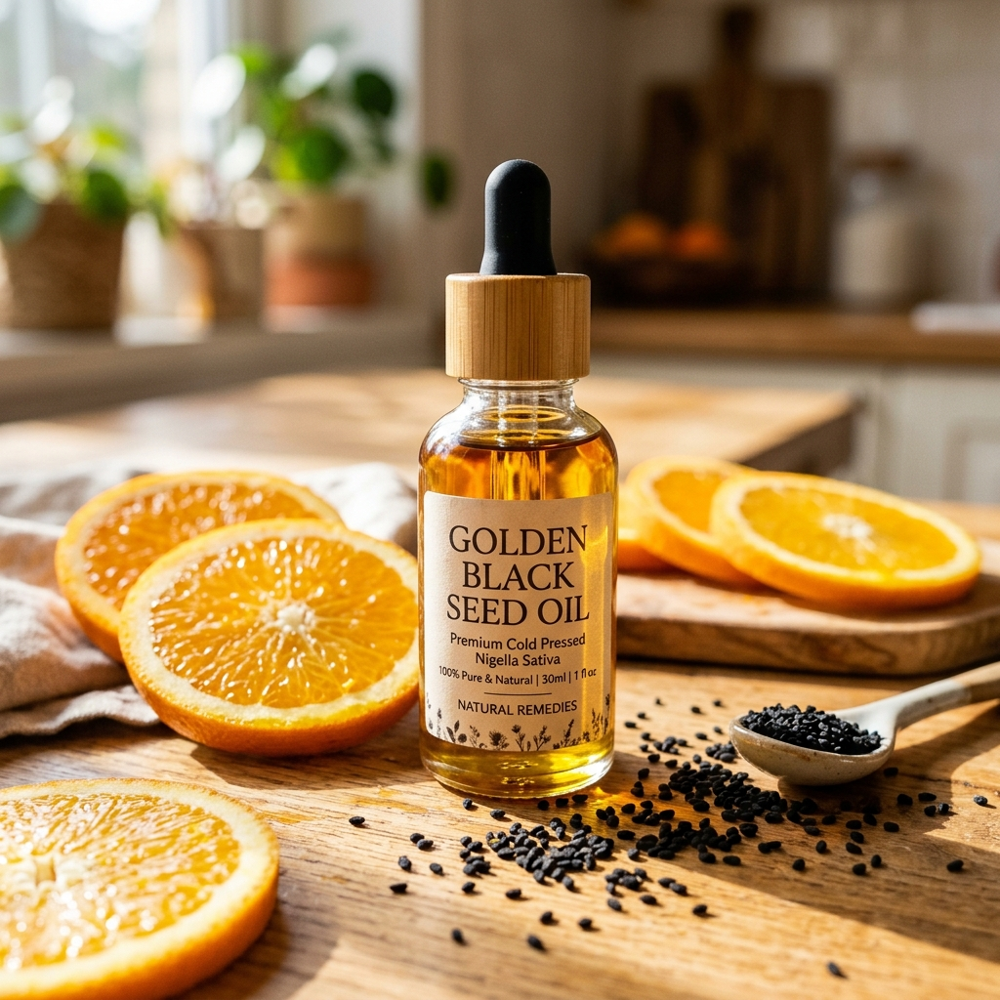

Schwarzkümmelöl für Kinder: Sanfte Pflege für kleine Entdecker

Das kindliche Immunsystem befindet sich im Aufbau und benötigt natürlichen Schutz aus der Natur. Reines Schwarzkümmelöl ist jedoch aufgrund seines intensiven, herben Geschmacks für Kinder oft schwer einzunehmen. Aus diesem Grund haben wir eine speziell abgestimmte Formel entwickelt: Schwarzkümmelöl (Nigella sativa) + Aspiröl (Färberdistelöl) + frisches Orangenöl. Diese milde Kombination macht Schwarzkümmelöl für Kinder endlich zugänglich und angenehm.
Warum Schwarzkümmelöl die bessere pflanzliche Alternative zu Fischöl ist
Zahlreiche Eltern greifen auf industrielles Fischöl zurück, um den Bedarf ihrer Kinder an wichtigen Omega-Fettsäuren zu decken. Dabei wird oft übersehen, dass Fischöl aufgrund von Meeresverschmutzung Rückstände von Schwermetallen (wie Quecksilber) oder Mikroplastik enthalten kann, wenn es nicht aufwendigst hochgereinigt wurde.
Unser Schwarzkümmelöl für Kinder ist die perfekte, zu 100% saubere und rein pflanzliche Alternative. Es wächst sicher in nährstoffreicher Erde, fernab von maritimer Belastung. Es versorgt Ihr Kind mit pflanzlichen essentiellen Fettsäuren und Vitaminen, ganz ohne den berüchtigten fischigen Nachgeschmack.
Ein natürliches Vitamin- und Omega-Depot für das kindliche Wachstum
Diese milde Schwarzkümmelöl-Rezeptur ist ein echtes Nährstoffdepot. Das beigefügte Aspiröl (Safloröl) liefert extrem hohe Mengen an natürlichem Vitamin E, einem der wichtigsten Antioxidantien für den Zellschutz. Gleichzeitig sorgt der wertvolle Mix aus Omega-6 (Linolsäure) und Omega-9 (Ölsäure) Fettsäuren dafür, dass die kognitive Entwicklung und das Nervensystem des Kindes aus rein pflanzlichen Quellen unterstützt werden.
Die sanften Zutaten: Milderung des intensiven Schwarzkümmelöl-Geschmacks
Aspiröl (Färberdistelöl): Dieses Öl ist außergewöhnlich leicht, extrem hautverträglich und zieht rasch ein. Es ist die ideale Basis, um das kräftige Schwarzkümmelöl für sensible Kinderhaut und zarte Mägen abzumildern.
Orangenöl: Gewonnen aus den Schalen reifer Orangen, verleiht dieses ätherische Öl dem Produkt eine fruchtige Frische, die den typischen Schwarzkümmel-Geruch maskiert und gleichzeitig aromatherapeutisch beruhigend und stimmungsaufhellend wirkt.
Wie wende ich Schwarzkümmelöl bei Kindern richtig an?
Innerliche Einnahme: Nach kurzer Rücksprache mit Ihrem Kinderarzt können Sie täglich ein paar Tropfen des Schwarzkümmelöls in den Joghurt, das Müsli oder in Fruchtsäfte mischen. Der leichte Orangengeschmack wird von Kindern sehr gut akzeptiert!
Äußerliche Pflege: Gerade in den kühlen Wintermonaten eignet sich das Schwarzkümmelöl hervorragend als sanftes Massageöl für Brust und Rücken. Bei trockenen Hautpartien können Sie einige Tropfen in die tägliche Kinder-Pflegecreme mischen.
Häufig gestellte Fragen (FAQ)
Ab welchem Alter kann Schwarzkümmelöl für Kinder verwendet werden?
Für die äußerliche Anwendung auf der Haut (Massagen) ist es bereits für Kleinkinder geeignet. Für die innerliche Einnahme von Schwarzkümmelöl empfehlen wir stets, zuvor kurz Ihren Kinderarzt zu konsultieren.
Sind in dieser Orangen-Variante künstliche Aromen enthalten?
Nein! Der fruchtige Duft und Geschmack stammt zu 100% aus natürlichem, ätherischem Orangenöl (Citrus sinensis). Das Produkt ist absolut frei von Zucker, Süßungsmitteln oder künstlichen Aromen.
Kann dieses Schwarzkümmelöl tatsächlich Fischöl ersetzen?
Absolut. Es liefert wertvolle pflanzliche Omega-6 und Omega-9 Fettsäuren sowie zellschützende Phytosterine und Vitamine. Eine hervorragende, vegane Lösung ohne das Risiko maritimer Schadstoffe.
Anadoa Naturhaus
Natur pur. Höchste Qualität direkt aus Anatolien.